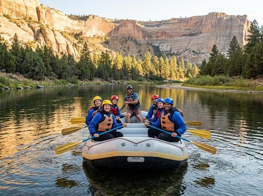

Our Mission

At Lone Star Ridge Co., our mission is to connect adventures with the raw beauty and thrill of untamed rivers. Whether you are a first-time paddler or a seasoned thrill-seeker, our certified guides ensure every trip is safe, unforgettable, and deeply respectful of nature.